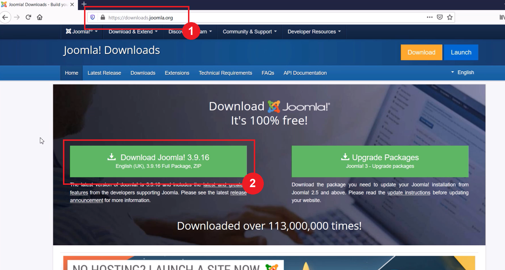
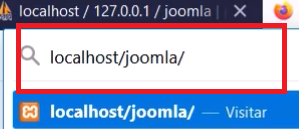
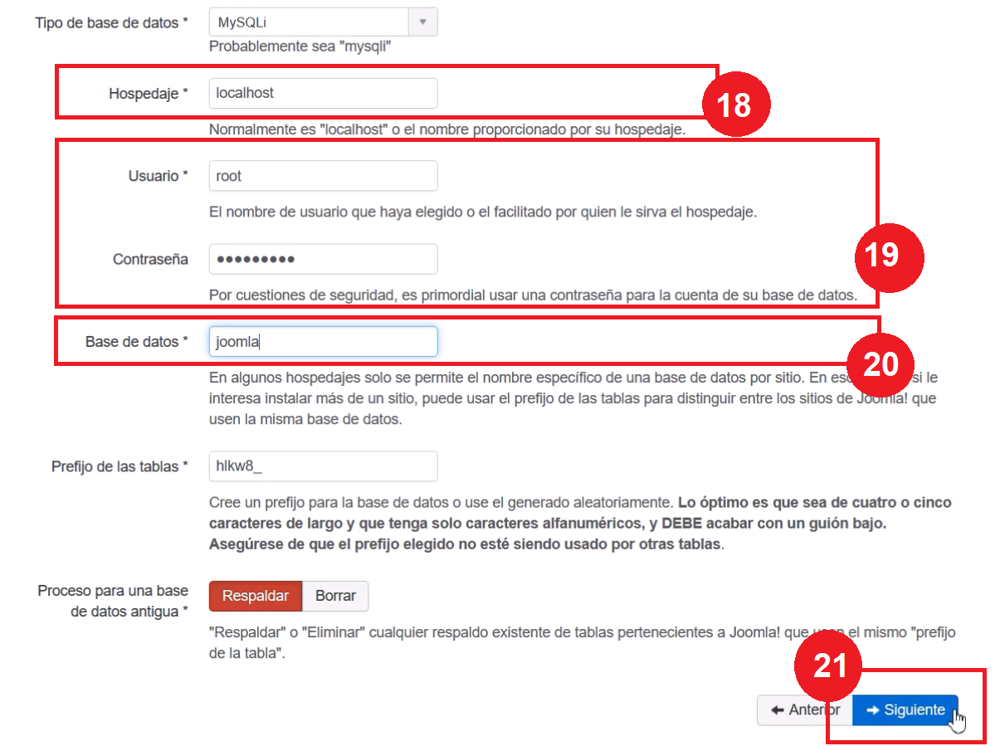

¿Que es Joomla?
Joomla es la herramienta lider en la creación de webs, es el Gestor de Contenidos (CMS en inglés) más premiado a nivel mundial,
existen más de 30 millones de páginas web creadas con Joomla y tienes a tu disposición más de 10.000 componentes que te permitirán
ir ampliando las funcionalidades de tu web con nuevas opciones como pueden ser tienda virtual, envío de boletines, foros, galerías de imágenes
y un sinfín de posibilidades que no paran de crecer.
Joomla permite gestionar con mucha facilidad toda tu web, crear un nuevo apartado,
modificar los actuales, añadir nuevas imágenes, crear nuevas opciones de menú y casi cualquier cosa que puedas necesitar la podrás hacer rápidamente
y sin tener conocimientos técnicos, conociendo Word o algún editor de textos podrás manejar tu web.
Joomla es software libre (Open Source), lo puedes usar gratuitamente y el 95% de los componentes para Joomla también son gratuitos.
Ventajas de utilizar Joomla.
-
Proceso de aprendizaje
Joomla es bastante sencillo. Dispone de plantillas y funcionalidades estándar, que permiten diseñar un sitio web desde cero e ir aprendiendo de forma intuitiva con el paso del tiempo. En general, la estandarización de dichos elementos lo convierten en un CMS con un código muy estable. -
Administración de usuarios
Aquellos negocios online que necesitan crear diversos tipos de accesos, ya sea para miembros del equipo de trabajo o áreas de clientes, encuentran en Joomla la solución perfecta. Esta funcionalidad viene de serie, integrada en el núcleo de Joomla y te permite una personalización prácticamente sin límites, para que puedas crear los niveles de acceso que sean necesarios. -
Opciones de configuración
Además de todos estos elementos estándar y características que se aplican al conjunto del sitio web, Joomla dispone de diversas opciones para hacer configuraciones individualizadas para crear páginas diferentes dentro del sitio. En este sentido, podrás utilizar diferentes plantillas dentro de la plataforma y crear distintos espacios con diseños acordes a los contenidos que hayas creado. -
Idiomas
Por último, una de las características principales de Joomla es la creación de plataformas en un gran número de idiomas, incluso para la creación de sitios web multilingües. Además las secciones de la plataforma pueden personalizarse de forma independiente, ya sean contenidos, páginas, menús, etc., eligiendo un idioma diferente para cada uno de ellos.
¿Cómo instalar Joomla?
A continuacion podras ver con detenimiento como instalar Joomla en un servidor local. En este caso nos valdremos de Xampp como servidor local y explicaremos como realizar la instalación. Tambien anexaremos un video tutorial donde podras ver cómo se realiza la instalación mas detalladamente.
Paso 1) Principalmente necesitamos contar con los recursos necesarios para nuestra instalación. Para eso primero debemos decargar la paquetería de Joomla. Esto lo podemos hacer desde la pagina principal de Joomla a la cual podemos acceder escribiendo el link que vemos en la imagen o directamente desde aqui.
Paso 2) Luego es tan sencillo como presionar el boton donde dice Download. Recomendamos descargar la version mas estable(es la de la izquierda).
Al descargar el archivo nos quedará el siguiente paquete:
Paso 3) Ahora que ya tenemos el paquete procedemos a descomprimirlo. Recomendamos elegir la opcion que se muestra en la imagen, por motivos de comodidad.
Paso 4) Al descomprimirlo nos quedará una carpeta, la cual vamos a renombrar tal como se muestra en la imagen:

Paso 5) Ahora necesitamos dirigirnos a la carpeta raíz de Xampp. Necesitamos encontar la ruta que se muestra en la imagen. Es decir, la carpeta htdocs dentro de xampp:
Paso 6) Cuando ya estemos en esa carpeta, simplemente arrastramos la carpeta que descomprimimos:
Paso 7) Y luego procedemos a iniciar los servicios de Apache y de MySql desde el panel de control de xampp:
Paso 8) Cuando los servicios ya esten iniciados vamos a dirigirnos a phpmyadmin. Para eso solo debemos escribir: localhost/phpmyadmin/, tal como se muestra a continuacion:
Paso 9) Dentro del panel de administrador vamos a crear una nueva base de datos donde alojaremos Joomla. Damos en "Nueva":
Paso 10) Para la base de datos necesitamos un nombre y podemos ponerle el que deseemos. En nuestro caso sera "joomla".
Paso 11) Es importante seleccionar la opción "Cotejamiento".
Paso 12) Luego damos click en "Crear"
Con la base de datos creada, ya podemos comenzar la instalacion de Joomla. Para eso escribimos en la barra del buscador de nuestro navegador, la siguiente direccion: localhost/joomla, tal como se muestra:
Eso nos llevará al asistente de instalación web de Joomla. Deberian ver algo como:
Paso 13) Estando dentro del asistente de instalacion simplemente es de seguir los pasos que te solicitan.
Primeramente un nombre para el sitio.
Paso 14) Luego debemos proporcionar un correo electronico donde se enviaran las configuraciones del sitio.
Paso 15) Escribimos un nombre de usuario el cual utilizaremos para acceder al panel de administracion de Joomla.
Paso 16) Tambien proporcionamos una contraseña y luego reescribimos esta misma a modo de confirmacion.
Paso 17) Luego damos click en Siguiente
Paso 18) La siguiente pestaña tambien es facil de completar. En el nombre de Hospedaje escribimos localhost.
Paso 19) En los siguientes Usuario y Contraseña debemos proporcionar los mismos datos con los que nos logueamos en MYSQL.
Paso 20) Luego establecemos el nombre de la base de datos, donde utilizaremos la que creamos anterirormente. Colocamos es mismo nombre.
Paso 21) Damos click en Siguiente
Paso 22) En la tercer y ultima pestaña simplemente damos click en Instalar.
A continuacion comenzara la instalación de Joomla. Solo debemos esperar.
Paso 23) Finalmente Joomla ya está instalado en nuestro servidor local. Pero antes de empezar a utilizarlo debemos asegurarnos de eliminar la carpeta installation, que se encuentra dentro de la carpeta joomla que copiamos en htdocs de xampp.
Para ver el video tutorial presiona aquí